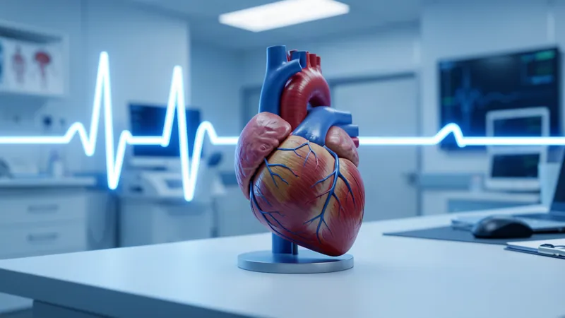
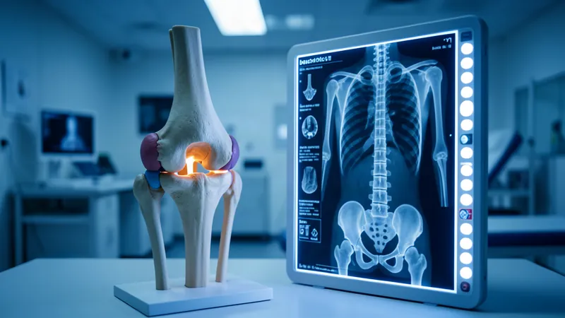
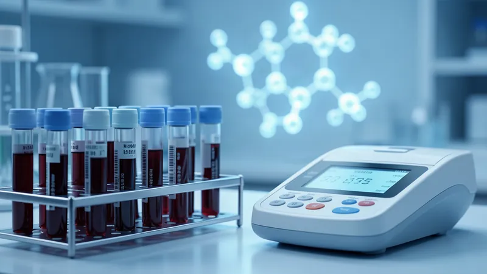
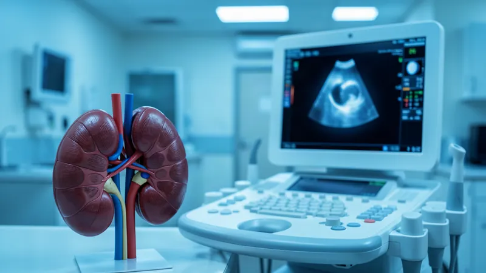
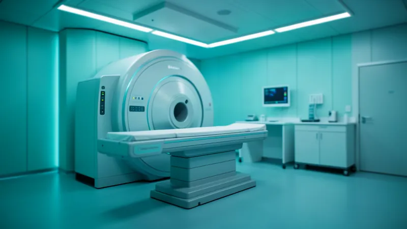

Cardiology #13 · 2027Heart & Vessels
3 departments- Cardiology
- Thoracic and Cardiovascular Surgery
- Vascular Surgery
Urgent or emergency symptoms? Contact your local emergency services or the nearest medical facility now. This website and our chat channels are not for emergencies.
Camnemi Medical Service coordinates your inquiry to Asan Medical Center (AMC), Seoul — and stays with you through each step, in English or Khmer. Dr. Chea Siek Ai leads our medical service team.
Camnemi coordinates your inquiry. Clinical services, medical decisions and appointments belong to Asan Medical Center.
Camnemi is the Official Agency of Asan Medical Center. We are not the hospital: we are the team that listens to your question first, explains the right service, prepares your documents, and passes your case to AMC.
Asan Medical Center (AMC) is a hospital in Seoul with a dedicated International Healthcare Center for patients from abroad. Every clinical service on this page is provided by AMC.

This is what Korean medical care looks like in published numbers. In Newsweek's World's Best Specialized Hospitals 2027, compiled with Statista, Asan Medical Center is ranked #2 in the world for endocrinology, and in the global top 10 for gastroenterology, urology, oncology and neurology.
Newsweek and Statista rank hospitals one specialty at a time. These are Asan Medical Center's positions worldwide in the 2027 edition.
Also ranked in the same edition: Cardiology #13 · Cardiac Surgery #23.
Source: Newsweek with Statista, World's Best Specialized Hospitals 2027, Asan Medical Center, Seoul (checked 29 Oct 2026). Each figure is a ranking within one specialty, not an overall hospital ranking. Rankings reflect Newsweek/Statista's evaluation, not an outcome for any individual patient.
Source: Asan Medical Center English website, "Medical Information (As of 2025)". Figures as published by AMC.
In Newsweek's World's Best Hospitals 2026, overall — the highest-placed hospital in Korea.Newsweek 2026, World's Best Hospitals — as announced by AMC.
Physicians from 88 countries have trained at AMC over the past decade.As announced by AMC.
Every department listed on AMC's English website, grouped by Camnemi for easier reading. Department names are AMC's own.

Cardiology #13 · 2027
Orthopedics #11 · 2027
Endocrinology #2 · 2027
Urology #5 · 2027Which service is possible for you is decided by AMC after review. Grouping by Camnemi; rankings shown are Newsweek 2027 specialty rankings.
Alongside its departments, AMC runs dedicated institutes and specialized centres, plus programs for patients from abroad.
AMC in Newsweek 2027: Oncology #6 in the world.
AMC in Newsweek 2027: Cardiology #13 and Cardiac Surgery #23 in the world.
One of AMC's three specialized institutes.
A selection from the specialized centres listed on AMC's English website.
Programs tailored by gender, age and disease at the Health Screening and Promotion Center.
Ask about thisOne-stop help with appointments, examinations, billing, admission and discharge, medical reports and CDs.
How it worksWritten only, based on records in English or Korean. AMC excludes certain conditions, and it is not for emergencies.
Ask about thisA real-time session with an AMC physician. A local physician must be present.
Ask about this
Opened in 1990, with programs tailored by gender, age and disease. Depending on your schedule, a variety of comprehensive examinations can be done in a single day.
Source: AMC English website, Health Screening and Promotion Center. Program options and scheduling are confirmed by AMC.
AMC's International Healthcare Center supports international patients in four stages, from before the visit to follow-up at home.
Appointments and examinations, with concierge coordinators in the hospital.
Admission and discharge, billing, medical reports and CDs, handled in one place.
Follow-up care by call or email.
AMC's in-hospital concierge coordinators support patients in these languages:
Direct billing to embassies and insurers is available for most organisations.
Khmer is not one of AMC's interpretation languages. Camnemi's own coordinators support Cambodian patients in Khmer and English, alongside AMC's international services.
Source: AMC English website, International Healthcare Center and Our Services. Clinical services, medical decisions and appointments belong to AMC.
Recent announcements from AMC's own English newsroom and recent videos from AMC's YouTube channel, with the hospital's official social channels. Headlines are shown exactly as AMC published them.
Last updated
Headlines and videos are published by AMC and refreshed automatically. A news item or video describes AMC; it does not mean a service is available to you. Availability is decided by AMC after review. Camnemi does not operate AMC's channels. Links open AMC's own pages on news-en.amc.seoul.kr and YouTube; videos may be in Korean.
Video consultation, second opinion and health screening are different services with different requirements. Whether any of them is possible is decided by AMC after review.
A real-time video consultation between you, your local physician and an AMC physician.
A written opinion from AMC specialists, based on the medical records you submit.
The Health Screening and Promotion Center offers programs tailored by gender, age and disease.
| Video consultation | Second opinion | |
|---|---|---|
| Format | Real-time video | Written only |
| Who takes part | You, your local physician and an AMC physician | AMC specialists, reviewing your records |
| You receive | A full written report after the consultation | A written opinion |
| Requirement | A local physician must be present | Medical records submitted through the secure page |
Availability is confirmed only by Asan Medical Center after its medical team reviews your case.
The hospital's dedicated department for international patients, with concierge coordinators.
Director of Medical Service, Camnemi
Dr. Chea coordinates patients' inquiries and accompanies them through the process. Clinical decisions are made by the treating medical team at Asan Medical Center.
No time frames are promised — each case moves at the hospital's pace.
To Camnemi, without medical details.
CamnemiAnd explain which AMC service may be relevant.
CamnemiThrough Camnemi's secure registration page — your details, passport page and the signed AMC consent form. Never in chat.
Open the secure registration page
CamnemiAnd decides whether a service is possible.
Asan Medical CenterIncluding appointments, if applicable.
Asan Medical CenterCamnemi does not collect medical records in Telegram, WhatsApp or email. Records are sent only through the secure page that our medical team gives you.
Your inquiry goes to Camnemi, not to the hospital. Please do not include medical details — we will explain how records are submitted if needed.